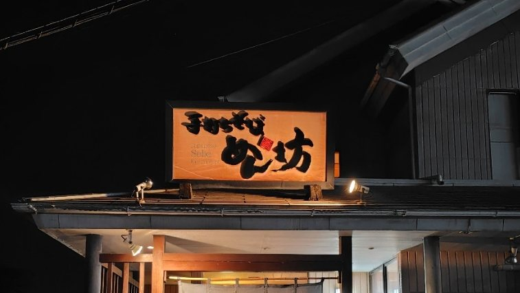
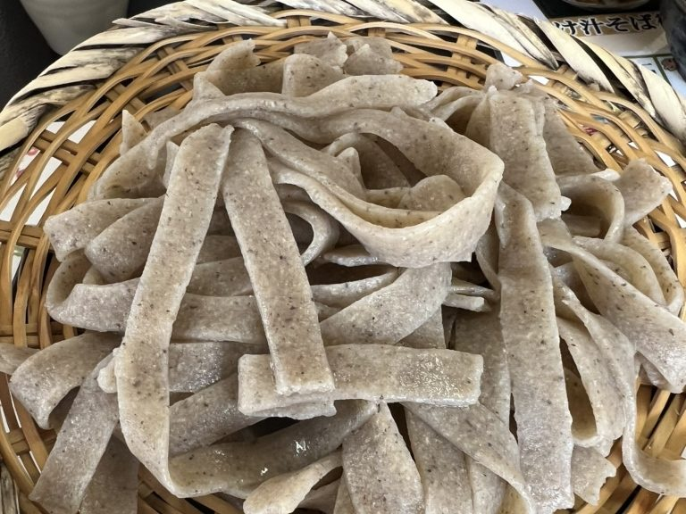
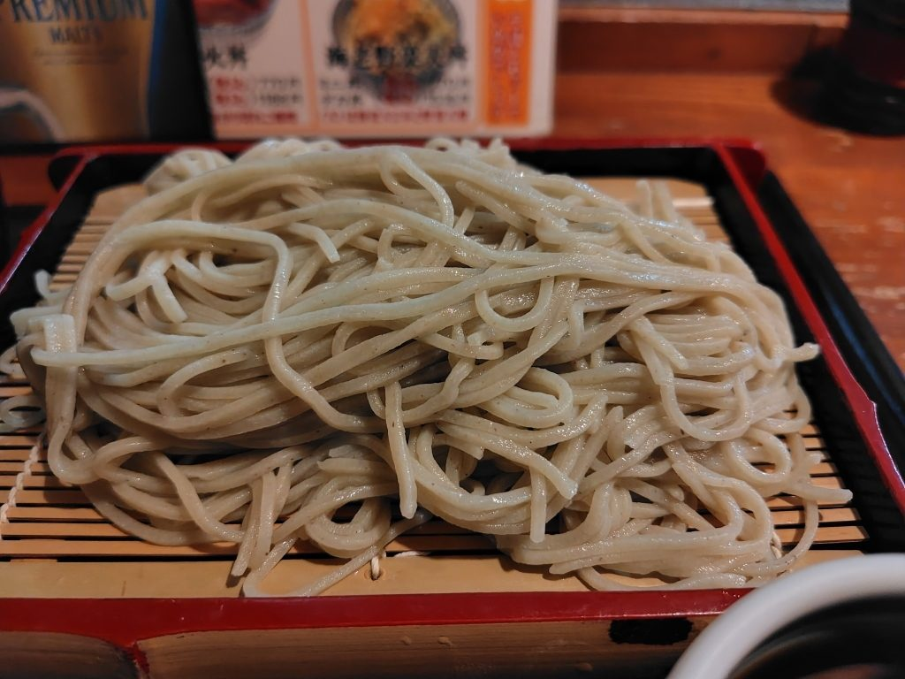
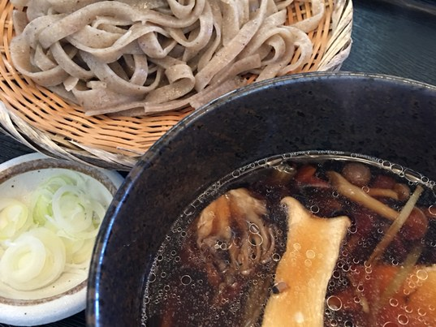
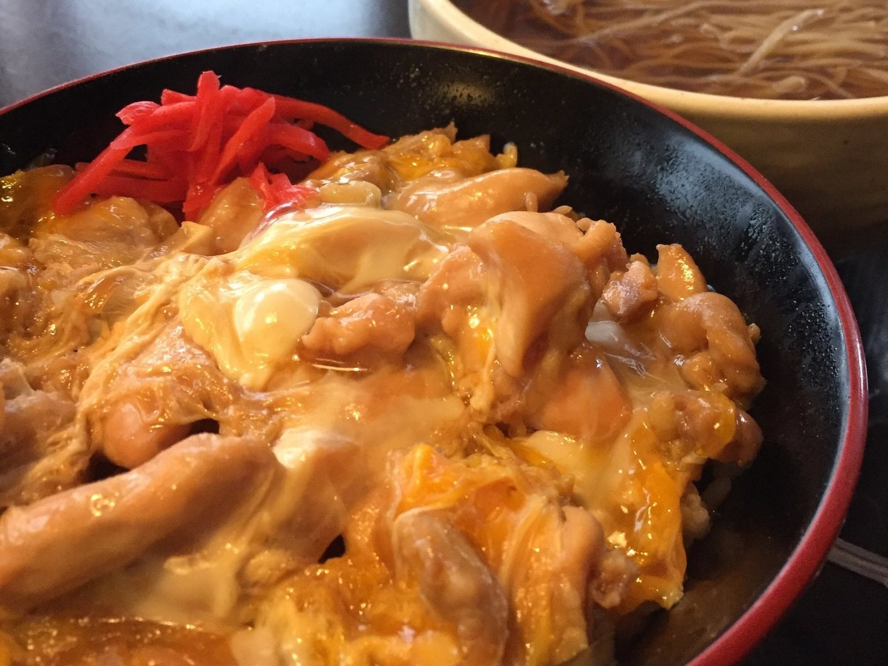
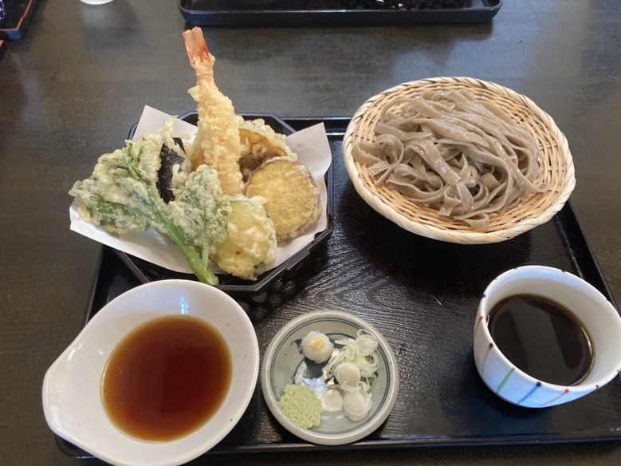
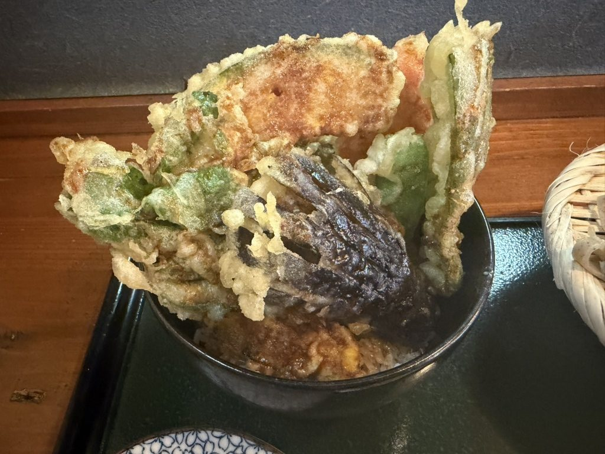
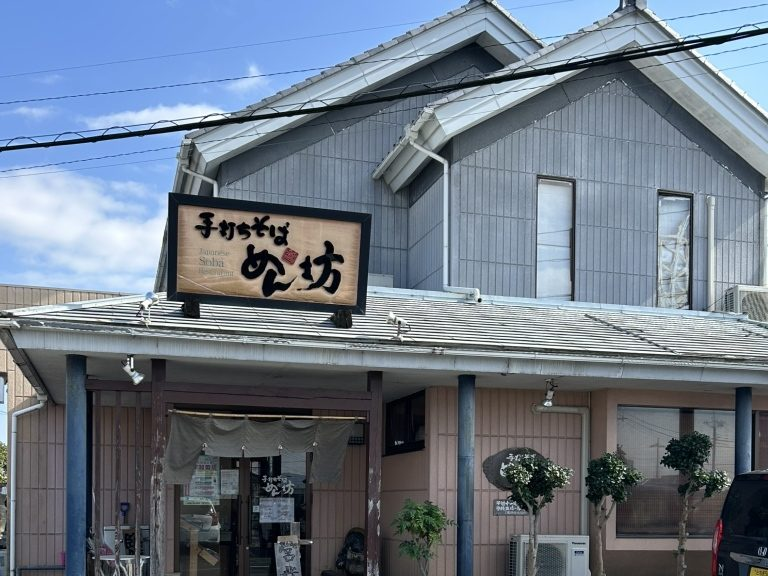

そばを選び、つけ汁を選ぶ。
手打ちのそばに、七種のつけ汁。小山市松沼で、昼と夜にお迎えしております。
当店のそばは二つ。平打ちの太麺と、細打ちの二八です。
せいろでも、温かいそばでも、丼とのセットでも、ご注文のたびにどちらかをお選びいただきます。冷たいか温かいかも、そのときにお申し付けください。
麺は大盛り、特盛りも承ります。


お選びいただいたそばに、お好みのつけ汁を添えてお出しします。

つけ汁そば御膳では、つけ汁を四種からお選びいただけます。
粗挽き、二八、九割、大根。当店で打っている四つのそばです。
味わい深い、平打ちの田舎そばです。
粗く挽いた粉を、太く平たく切ります。
口に入れたときの粉の味と、噛みごたえで召し上がるそばです。
太麺をお選びの方には、こちらをお出しします。
のど越しの良い、細打ちの二八そばです。
そば粉八につなぎ二。細く切って、するりと運ぶそばです。
つけ汁との相性を考えて、当店の細麺はこの二八にしております。
細麺をお選びの方には、こちらをお出しします。
風味の良い、細打ちのそばです。
そば粉を九割まで上げ、細く切ります。
つなぎが少ないぶん、そばの香りをそのまま召し上がっていただけます。
限定でお出ししております。
食感の良い、人気の変わりそばです。
そばに大根を合わせ、歯ざわりで召し上がっていただく一枚です。
ほかのそばをご注文のときも、麺を大根そばへお取り替えできます。
太いか細いかを決めていただければ、あとは当店がご用意いたします。

昼は丼ランチです。鶏天丼、唐揚げ丼、鶏かつ丼、親子丼。それぞれにそばを付けてお出しします。
唐揚げ丼ランチは、十七年間ずっとご愛顧いただいている当店のランチです。親子丼は、卵のとじ方をお選びいただけます。半熟か、固めか。
丼を小さくしたい方には、小盛り丼ランチをご用意しております。小盛り丼ランチのそばは、温かいそばへの変更も承ります。
貴族天丼は海老天が三本、二十食限り。海鮮丼は小田原港から届いた旬の鮮魚で、十食限りです。
夜は丼セットです。丼はミニ丼とデカ丼をご用意しておりますので、そばを主役に丼を添えるか、丼を主役にそばを添えるか、お決めください。
かき揚げ、海老天、ナマズ天、舞茸天、かしわ天、七会きのこ天。
せいろにも温かいそばにも、一品からお付けします。温かい天ぷらそばは、天ぷらを別盛りでお出しします。


「今回はずっと気になっていた太麺のそばがある「めん坊」へ！土曜日の13:30頃、待ちなしで入れました◎そばは普通の細麺か太麺か選べる仕様 メニューも多いしどれもコスパ良い！店員…」
お客様の声より（2026年7月）
「日曜のランチで利用しました。温かいお蕎麦と鶏カツ丼のセット。前回は太麺を食べたので今回は細麺を食べました サクサクの鶏カツがいっぱい乗っててお腹いっぱいになりました 次から次へとお客さんが入ってきて何…」
お客様の声より（2024年3月）
「何度か伺ったことがあるお蕎麦屋さんです。週末のお昼時に伺いましたが、大盛況ですね 店内は満席で、待つ人もチラホラと。お蕎麦は太麺と細麺があります。細麺はスタンダードなお蕎麦で…」
お客様の声より（2023年7月）
「細麺と太麺が選べるの嬉しいです！手打ちそば食べたくなったらまた利用したいです(*^^*) 天ぷらも好みのサクサクで美味しかったです！ご馳走様でした」
お客様の声より（2021年11月）
昼と夜の二部でお迎えしております。11:00〜14:00／平日夜は17:00〜21:00／土日夜は17:00〜22:00。定休日は水曜日です。
入店状況により、早く閉める日がございます。遠くからお越しの際は、お電話でご確認いただけますと幸いです。
お支払いは現金のみ承っております。クレジットカード・電子マネー・QRコード決済はお使いいただけません。
お車は、店の道を挟んだ向かい側の駐車場へお停めください。
お席のご希望（椅子席・お座敷）はお電話でお尋ねください。
御慶事、御法事、御宴会、お食事会も承っております。飲み放題もご用意しております。人数とご予算をお電話でお聞かせください。

小山と栃木を結ぶ県道沿いにございます。
栃木県小山市松沼642-3
0285-37-2800
そばを選び、つけ汁を選ぶ。松沼でお待ちしております。
| 住所 | 〒323-0007 栃木県小山市松沼642-3 |
|---|---|
| 電話 | 0285-37-2800 |
| 営業時間 | 昼 11:00〜14:00 夜（月・火・木・金）17:00〜21:00（L.O.20:30） 夜（土・日）17:00〜22:00（L.O.21:30） |
| 定休日 | 水曜日 |
| お支払い | 現金のみ（クレジットカード・電子マネー・QRコード決済は不可） |
〒323-0007 栃木県小山市松沼642-3
Googleマップで開く